Lab 02 · Foundations
Affinity metrics
Before any clustering algorithm merges two cells, it needs a score that says how much they belong together. This lab compares three scores (edge weight, shared neighbors, and pin-count for multi-pin nets) and shows that the choice changes which pair merges first.
narrate_clips.sh in the course repo, then rebuild this site.Slides
All 17 slides of the video. Click one to open it full size, or download the whole deck.

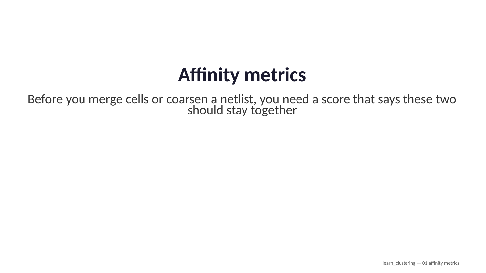


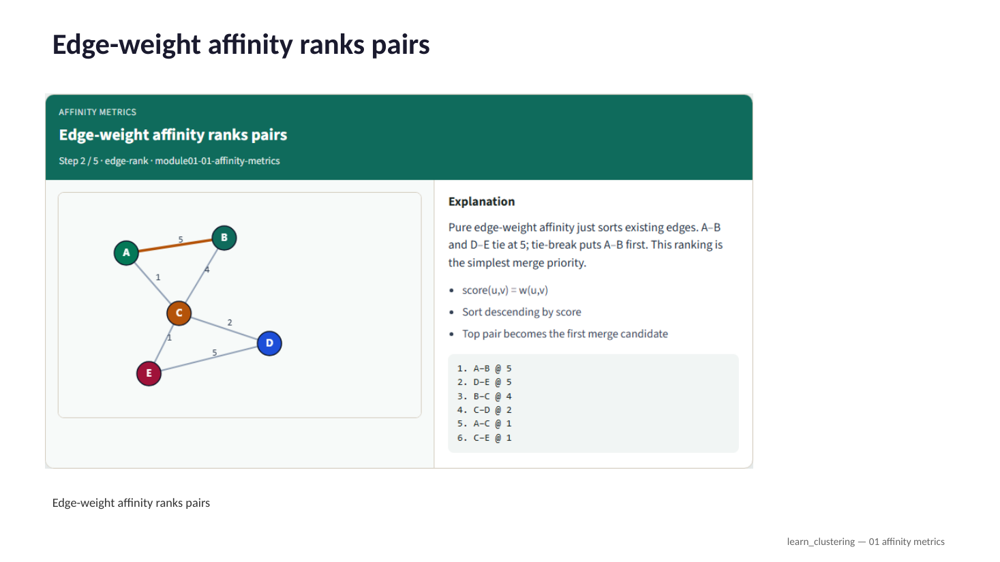

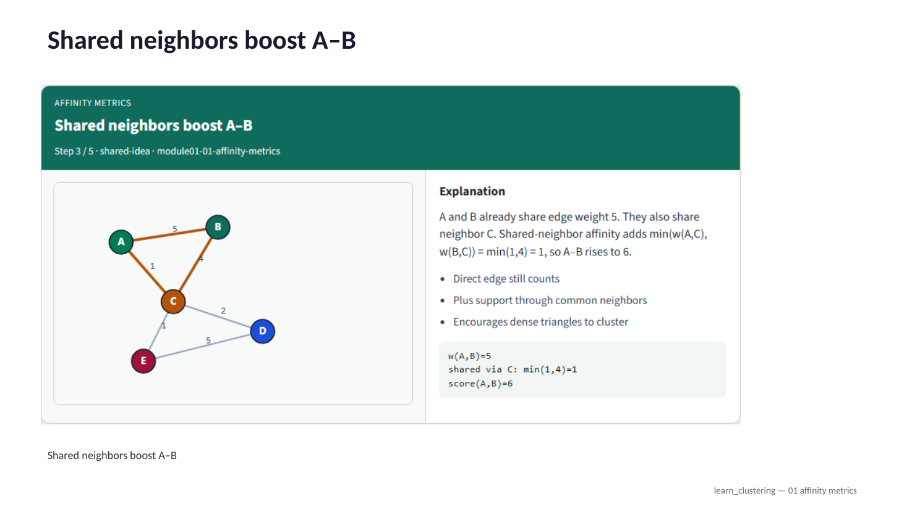

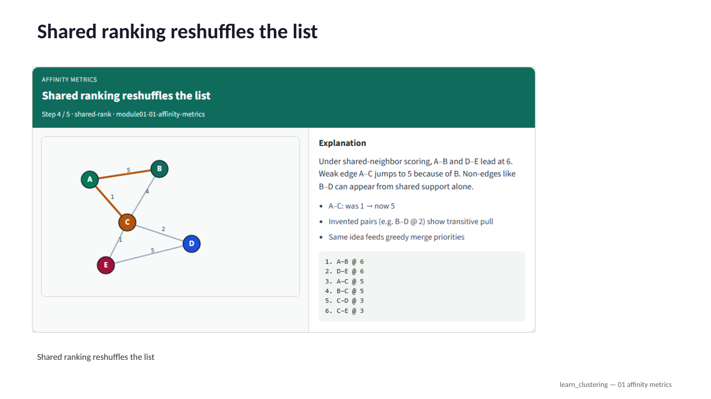

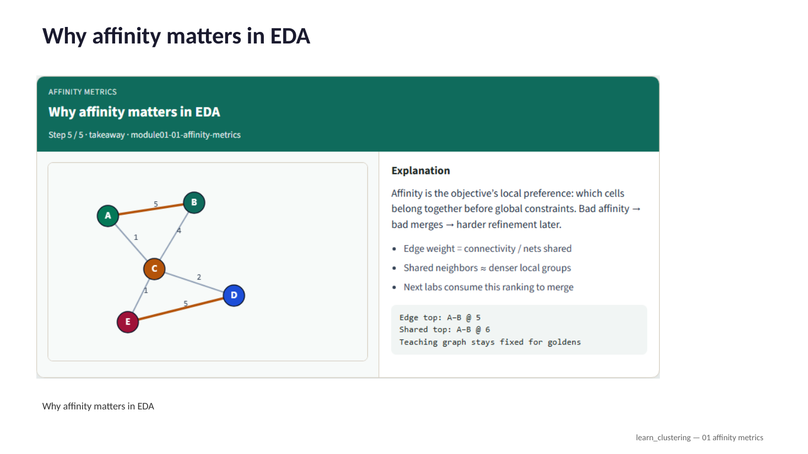

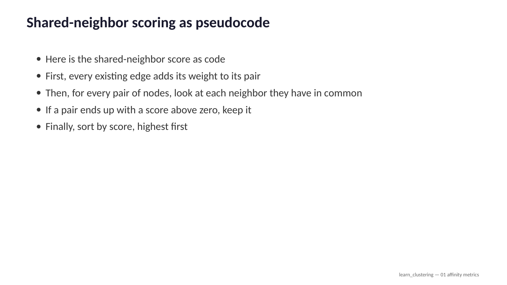

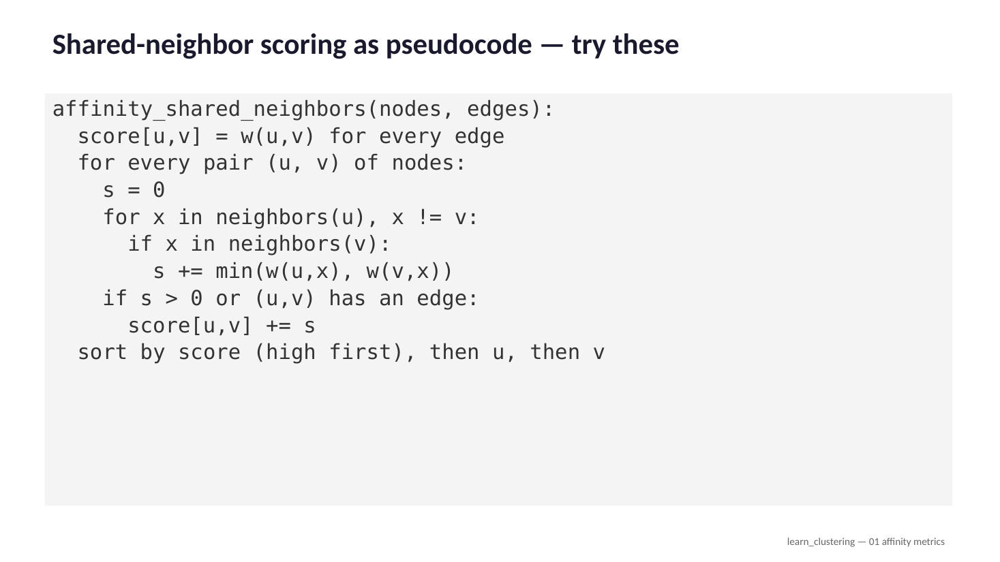

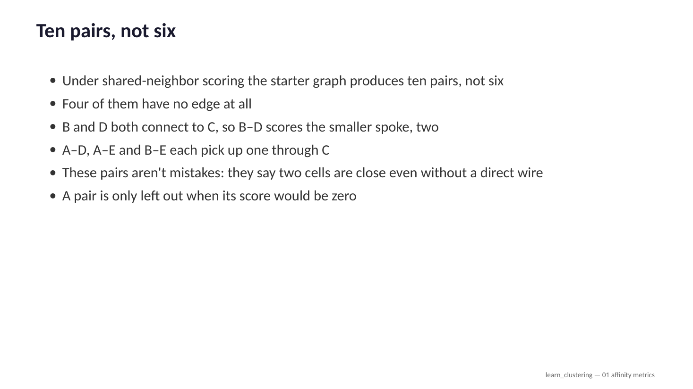

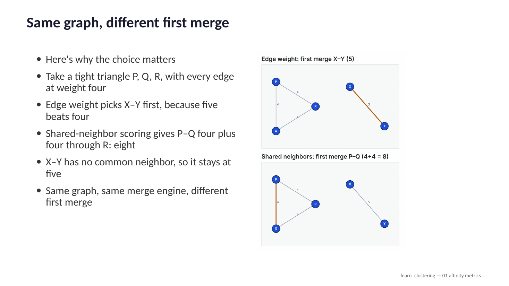

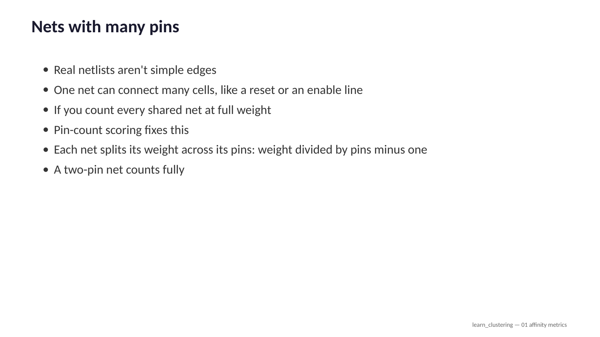

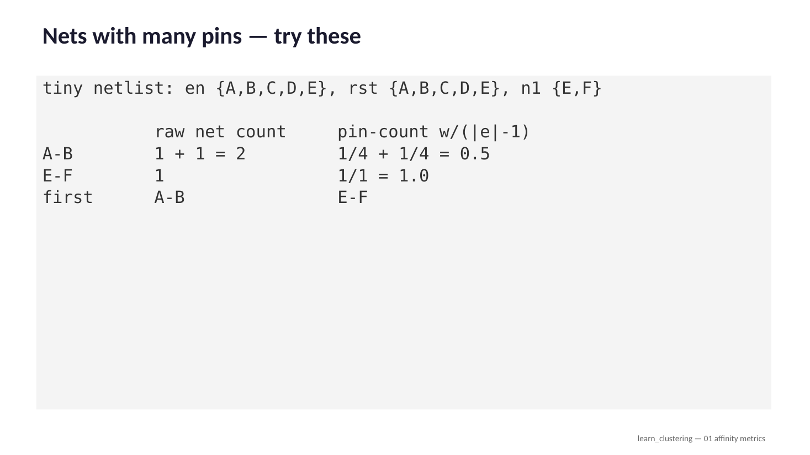


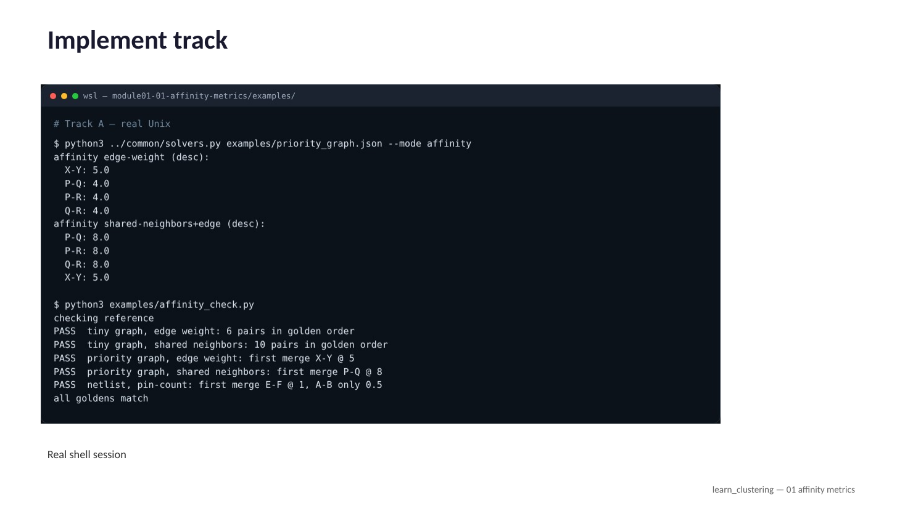

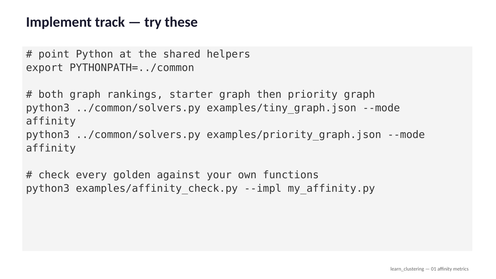


Interactive lab
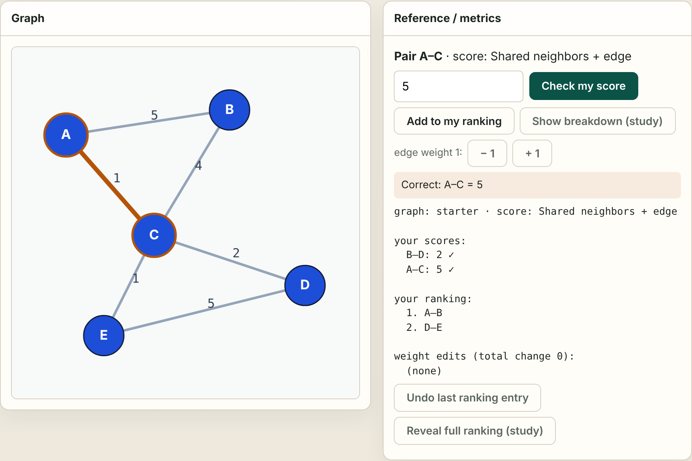
Do the scoring yourself, right in the browser:
- Pick any pair of nodes, even one without an edge, compute its score by hand, and check it.
- Build your own ranking in order. The tie-break counts.
- Change edge weights and watch which pair merges first.
- Three graphs (starter, priority, tiny netlist) and four scores.
Ten challenges, from Intro to Stretch, check your own answers. The study aids are there if you're stuck, but what they reveal stops counting.
Implement (Track A)
Write the three scoring functions yourself and check them against the goldens. The commands below run inside the course repository, from courses/learn_clustering/module01-01-affinity-metrics/.
tiny_graph.jsonStarter graph (golden 1)
priority_graph.jsonPriority graph: the first merge flips (golden 2)
tiny_netlist.jsonTiny netlist with wide nets (golden 3)
affinity_check.pyGolden self-check; --impl checks your code
Examples — Affinity metrics
Track A (implement). Shared helpers: ../common/graphutil.py.
Goal
Define three affinity scores, compute them by hand and in code, and show that the choice of score changes which pair merges first.
Affinity answers one question for every pair of cells: how much do these two want to be in the same cluster? Every clustering algorithm later in this course (greedy merge, multilevel coarsening, hypergraph clustering) starts from such a ranking, so a bad score means bad merges that later refinement has to repair.
| Score | Uses | Idea |
|---|---|---|
| Edge weight | graph | direct connection only |
| Shared neighbor + edge | graph | direct connection plus support through common neighbors ("connectivity") |
| Pin-count (clique model) | netlist | each net spreads its weight over its pins, so wide nets count less |
API (target)
affinity_edge_weight(edges) -> list[(u, v, score)] # sorted
affinity_shared_neighbors(nodes, edges) -> list[(u, v, score)] # sorted
affinity_pin_count(nodes, hyperedges) -> list[(u, v, score)] # sorted
Sorted means score descending, then u, then v alphabetically. This tie-break
is part of the API: A–B and D–E both score 5, and the golden puts A–B first because A < D.
Later labs (greedy merge) take the first pair, so an unstable tie-break changes their results.
Definitions
Edge-weight affinity
score(u,v) = w(u,v)
Shared-neighbor + edge affinity
score(u,v) = w(u,v) + sum_x min(w(u,x), w(v,x))
over common neighbors x
w(u,v) is 0 when there is no direct edge. A pair with no edge but a common neighbor
still gets a score (B–D below). Pairs whose score would be 0 are not listed.
min means a neighbor only supports a pair as strongly as its weaker spoke.
Pin-count (clique-model) affinity for netlists, where one net can connect many pins:
score(u,v) = sum over nets e containing u and v of w(e) / (|e| - 1)
|e| is the number of pins on the net. A 2-pin net gives its full weight; a 5-pin net
gives only a quarter to each pair. Wide nets such as reset, enable or clock touch many cells
and should not glue them all together.
Pseudocode
affinity_shared_neighbors(nodes, edges):
adj = adjacency map, adj[u][v] = w(u,v) (both directions)
score = {}
for (u, v, w) in edges: score[u,v] += w # direct part
for every unordered pair (u, v) of nodes:
s = 0
for x in neighbors(u), x != v:
if x in neighbors(v):
s += min(adj[u][x], adj[v][x])
if s > 0 or (u,v) in score: score[u,v] += s
return pairs sorted by (-score, u, v)
affinity_pin_count(nodes, nets):
score = {}
for net e with pins P (|P| >= 2):
share = w(e) / (|P| - 1)
for every pair (u, v) in P: score[u,v] += share
return pairs sorted by (-score, u, v)
Golden 1 — starter graph (examples/tiny_graph.json)
Edges: A–B 5, A–C 1, B–C 4, C–D 2, D–E 5, C–E 1.
Edge weight (exactly the six existing edges):
| Rank | Pair | Score |
|---|---|---|
| 1 | A–B | 5 |
| 2 | D–E | 5 |
| 3 | B–C | 4 |
| 4 | C–D | 2 |
| 5 | A–C | 1 |
| 6 | C–E | 1 |
Shared neighbor + edge (ten pairs: the six edges plus four pairs that only share a neighbor):
| Rank | Pair | Score | Why |
|---|---|---|---|
| 1 | A–B | 6 | 5 + via C min(1,4)=1 |
| 2 | D–E | 6 | 5 + via C min(2,1)=1 |
| 3 | A–C | 5 | 1 + via B min(5,4)=4 |
| 4 | B–C | 5 | 4 + via A min(5,1)=1 |
| 5 | C–D | 3 | 2 + via E min(1,5)=1 |
| 6 | C–E | 3 | 1 + via D min(2,5)=2 |
| 7 | B–D | 2 | no edge; via C min(4,2)=2 |
| 8 | A–D | 1 | no edge; via C min(1,2)=1 |
| 9 | A–E | 1 | no edge; via C min(1,1)=1 |
| 10 | B–E | 1 | no edge; via C min(4,1)=1 |
The weak edge A–C climbs from rank 5 to rank 3 because A and C both connect strongly to B: the triangle A–B–C is a dense group.
Golden 2 — affinity changes the first merge (examples/priority_graph.json)
A tight triangle P–Q–R (every edge weight 4) and a lone pair X–Y (weight 5).
| Score | First merge | Why |
|---|---|---|
| Edge weight | X–Y @ 5 | heaviest single edge |
| Shared neighbor + edge | P–Q @ 8 | 4 + via R min(4,4)=4; X–Y has no common neighbor, stays 5 |
Same graph, same algorithm, different first merge. This is why the choice of affinity is a design decision, not a detail.
Golden 3 — wide nets (examples/tiny_netlist.json)
Two 5-pin nets (en, rst) touch A–E; one private 2-pin net joins E–F. All weights 1.
| Score | A–B (and every pair in A–E) | E–F | First merge |
|---|---|---|---|
| Raw net count (sum of w) | 2 | 1 | A–B |
| Pin-count, w/(|e|−1) | 1/4 + 1/4 = 0.5 | 1.0 | E–F |
Counting shared nets naively says A–B belongs together just because both see enable and reset. Pin-count scoring says E–F, the only pair with a private connection, matters more. Clustering a netlist turns into hypergraph clustering (module 03-03); this score is the bridge to it.
Try-these
From this module folder:
# point Python at the shared helpers
export PYTHONPATH=../common
# print both graph rankings for the starter graph
python3 ../common/solvers.py examples/tiny_graph.json --mode affinity
# same for the priority graph: compare the first line of each table
python3 ../common/solvers.py examples/priority_graph.json --mode affinity
# check every golden above, and print the rankings including pin-count
python3 examples/affinity_check.py --show
# check YOUR implementation (functions you have not written yet are skipped)
python3 examples/affinity_check.py --impl my_affinity.py
Unit tests for the shared helpers, from courses/learn_clustering:
PYTHONPATH=common python3 -m unittest common.test_solvers.TestFoundations -v
Starter prompts
- Compute the shared-neighbor score of A–C, B–D and C–E by hand, then compare with Golden 1.
- Implement
affinity_edge_weightandaffinity_shared_neighbors; runaffinity_check.py --impluntil the graph checks pass. (It feeds the edges in reverse order, so a missing tie-break fails.) - Explain in one sentence why A–C rises under shared-neighbor scoring.
- On the priority graph, explain why the first merge changes between the two scores.
- Implement
affinity_pin_count. Explain why A–B drops to 0.5 while E–F stays 1. - Stretch: copy the starter graph and raise D–E from 5 to 6. Predict both rankings first, then run the solver on your copy. Which pair is now first, and does A–C still climb?
Quiz
7 quick questions on this lab. Pick an answer for each, then check.
Full narration transcript
Affinity metrics
Before you merge cells or coarsen a netlist, you need a score that says these two should stay together. That score is affinity. In this module you’ll compare plain edge weight with shared-neighbor scoring on the same tiny graph—and watch who wants to merge first. Then you’ll see a graph where the two scores disagree, and a third score for real netlists, where one net can touch many cells.
Start with a tiny weighted graph
Five cells A through E with edge weights. Heavy edges A–B and D–E both weigh five; the bridge through C is weaker. Affinity will decide which pairs want to cluster first.
Edge-weight affinity ranks pairs
Pure edge-weight affinity just sorts existing edges. A–B and D–E tie at five; tie-break puts A–B first. That ranking is the simplest merge priority.
Shared neighbors boost A–B
A and B already share edge weight five. They also share neighbor C. Shared-neighbor affinity adds the minimum of those spokes—one—so A–B rises to six.
Shared ranking reshuffles the list
Under shared-neighbor scoring, A–B and D–E lead at six. Weak edge A–C jumps to five because of B. Non-edges like B–D can appear from shared support alone.
Why affinity matters in EDA
Affinity is the objective’s local preference: which cells belong together before global constraints. Bad affinity means bad merges, and harder refinement later.
Shared-neighbor scoring as pseudocode
Here is the shared-neighbor score as code. First, every existing edge adds its weight to its pair. Then, for every pair of nodes, look at each neighbor they have in common, and add the smaller of the two connecting weights. If a pair ends up with a score above zero, keep it. Finally, sort by score, highest first, and break ties alphabetically, so your list comes out the same every time.
Ten pairs, not six
Under shared-neighbor scoring the starter graph produces ten pairs, not six. Four of them have no edge at all. B and D both connect to C, so B–D scores the smaller spoke, two. A–D, A–E and B–E each pick up one through C. These pairs aren't mistakes: they say two cells are close even without a direct wire. A pair is only left out when its score would be zero.
Same graph, different first merge
Here's why the choice matters. Take a tight triangle P, Q, R, with every edge at weight four, and a lone pair X–Y at weight five. Edge weight picks X–Y first, because five beats four. Shared-neighbor scoring gives P–Q four plus four through R: eight. X–Y has no common neighbor, so it stays at five. Same graph, same merge engine, different first merge.
Nets with many pins
Real netlists aren't simple edges. One net can connect many cells, like a reset or an enable line. If you count every shared net at full weight, cells A and B look close just because both see reset. Pin-count scoring fixes this. Each net splits its weight across its pins: weight divided by pins minus one. A two-pin net counts fully. A five-pin net gives only a quarter to each pair.
Browser lab track
In the browser lab, you do the scoring. Click two nodes to pick a pair, even a pair with no edge, work out its score by hand, and type it in. You can also build your own ranking, one pair at a time, and change edge weights to see which pair merges first. You can switch between all three graphs and all the scores. The ten challenges check what you typed, your ranking and your edits. The breakdown and the full ranking are there for study, but anything they reveal no longer counts.
Implement track
In the implement track, print both rankings for the starter graph, then for the priority graph, and compare the first line of each table. Then write your own scoring functions, including pin-count, and run the golden checker on your file. It checks all three scores, and it feeds the edges in a scrambled order, so a missing tie-break shows up as a failure.
Pitfalls to watch
Watch for four things. Counting an undirected edge twice, once from each end. Adding the larger spoke instead of the smaller one, which makes everything look close. Forgetting the tie-break, so A–B and D–E swap places from run to run. And using raw net counts on a netlist, where wide nets like reset glue unrelated cells together.
Your turn
Match all three golden checks, then explain two things in your own words: why A–C climbs under shared-neighbor scoring, and why the priority graph changes its first merge. Take the short quiz, then continue to greedy pair merge, where these scores become the merge policy.